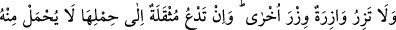
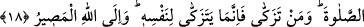
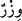
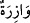
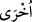

Buna göre akıllı ve mükellef olan kişiye lâyık olan, Allah’a ibâdet etmesi, O’ndan
korkması, O’nun rızâ ve hoşnutluğuna muhâlif olan şeylere cüret etmemesidir. İnsan
yaratıkların en şereflisi olmasına rağmen cansız varlıklardan daha kötü duruma
düşmemelidir.
Câfer-i Tayyâr (r.a.) der ki, Peygamber (s.a.) ile beraberdim. Bulunduğumuz civarda
bir dağ vardı. Peygamber (s.a.) “Şu dağa benden selam söyle, şayet suyu varsa sana
versin.” buyurdu. Câfer der ki, ben dağın yanına gittim ve “Sana selam olsun ey dağ!”
dedim. Dağ, “Buyur, ey Allah Rasûlü’nün elçisi!” dedi. Ben durumu arz ettim. Dağ,
“Rasûlullah’a benden selâm söyle” ve ona de ki “Ben Allah Teâlâ’nın “Yakıtı, insan ve
taş olan cehennem ateşinden sakının. Çünkü o ateş kâfirler için hazırlanmıştır”
(el-Bakara 2/24) kavlini işittikten sonra cehennem yakıtı olan taş, ben olacağım
endişesiyle hep ağladım; artık bende su kalmadı” dedi.”
18. Hiçbir günahkâr başkasının günahını yüklenmez. Yükü (günahı) ağır gelen
kimse onu taşımak için (başkasını) çağırsa, bu çağırdığı akrabası da olsa, onun
yükünden bir şey yüklenmez. Sen ancak görmeden Rablerinden korkanları ve
namazı kılanları uyarabilirsin. Kim temizlenirse o, kendi menfaatine temizlenmiş
olur. Dönüş Allah’adır.
“Hiçbir günahkâr” nefis, kıyâmet gününde “başkasının günahını yüklenmez.”
“__WORD__ kelimesi günah ve ağırlık demektir. “
” ve “
” kelimeleri hazf edilmiş
“nefs” kelimesinin sıfatlarıdır. Mânâ şöyledir: kıyâmet günü günahkar olan hiçbir nefis,
günahı yüklenilen nefsin âzâde olacağı şekilde başka bir nefsin günahını yüklenemez.
Bilakis her iki nefis de kendi kazandığı günahı yüklenir. Dünyada böyle değildir. Zâlim
hükümdarlar velîyi velî ile ve komşuyu da komşu ile cezâlandırırlar.
Allah Teâlâ’nın “(Fakat gerçek şu ki) elbette kendi yüklerini (veballerini), kendi
yükleriyle birlikte nice yükleri taşıyacaklar ve uydurup durdukları şeylerden
kıyâmet günü mutlaka sorguya çekileceklerdir” (el-Ankebût 29/13) kavline gelince
burada başkalarını saptıranlar kendi günahlarını yüklenecek ayrıca daha başka
günahları da yüklenecektir. Bu, kendi sapıklıklarının günahı ile başkalarını
saptırmalarının günahıdır. Bunların her ikisi de kendi günahıdır, başkalarının değil.
Halbuki Allah Teâlâ başkalarını saptıran bu insanların “Kâfirler, îman edenlere:
Bizim yolumuza uyun, sizin günahlarınızı biz yüklenelim...” (el-Ankebut 29/12)